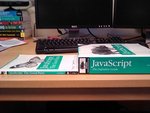

Welcome to the Touch Art Gallery Docs, a list of TAG-related material and references.
If you are a developer getting ready to start working on TAG, take a look at "setting up."
Web app
In the web app, we're using Git for version control, and our code is hosted on GitHub, so the first step for web app development is to get set up with Git. Check out the Git and GitHub page to the left.Now that Git is set up, you'll need to install some Node.js modules, which requires first installing Node.js. As mentioned on its website, Node is a platform that provides lots of utilities that facilitate web app creation. We're using a small subset of Node's functionality. In particular, we use Jade (for writing cleaner and more flexible html), Stylus (analogous to Jade, but for css), and Grunt (for automating a lot of tedious things like compiling Jade and Stylus files).
If you are not already familiar with Jade and Stylus, you can take a look at the workshops to the left or at other online documentation and tutorials (under the 'Web app links' heading to the left).
To install Jade, Stylus, Grunt, and any other Node modules we happen to be using, navigate to the directory containing your clone of the TAG repository. You will first want to install the grunt command line interface using $ npm install -g grunt-cli. This lets you run the grunt command from your terminal. If it complains about permissions, you may need to run the install command as administrator on Windows or using sudo on Macs. After grunt-cli is installed, you can run $ npm install. There is a file called package.json in the top-level TAG directory that tells npm which modules to install, so you should now have everything you need. Again, you might need to run this as admin/root.
To get accustomed to the structure of and normal workflow for the web app, take a look at the relevant page to the left.
Windows 8 app
Stay tuned! Let the team lead know if you need this information now...Server development
Jess Fu put together some notes on getting set up for server development.Why Git and GitHub?
Git is a fast and reliable version control system, and it is widely used, making it a helpful thing to know. GitHub allows us to create free, private, shared repositories (since we have an organizational account). It also has nice issue tracking and is the most widely-used code hosting service.Set up a GitHub account
- Go to github.com.
- Creating an account should be pretty straightforward.
- Make sure you add your full name to your account. It can be difficult to figure out who owns a username like "codehawk723."
- Once you have an account, you'll still need to be added to the TAG team. Email the current team lead!
- In order to pull from and push to github, you may need an ssh key. If so, there's probably documentation on github about it.
Clone the repository
The next step is to get a local version of the TAG webapp code, so you can develop on your machine. Win8 not necessary!- Install Git on your machine. If you have any trouble with this, let the current team lead know.
- Run $ git help to make sure Git is working (it should come up with a list of possible Git commands)
- If Git is working properly, run $ git clone https://github.com/browngraphicslab/tag.git to get your local copy. By default, it will clone into a directory called 'tag,' but you can change this by adding an argument to the command above, e.g., $ git clone https://github.com/browngraphicslab/tag.git awesome_directory_name
Make and commit some local changes
Now that you have a local clone, you can start developing. Change directory into the cloned repository and make some changes to a file (preferably something useful!).- Now, if you type $ git status this will show you a list of modified files (that is, modified since the last time you committed code) as well as some other useful information about the state of your local copy versus the state of the last commit.
- To commit code to your local clone, type $ git commit -am "your_commit_message_here" Here, we have combined a few actions in a convenient shorthand. To break it down a bit, 'git commit' on its own will commit any changes that have been added to the list of files ready for commit, and it will bring up a prompt asking for a commit message. Adding the flag '-a' adds all modified/deleted files to the list before committing, and adding the '-m' flag allows you to type your commit message on the same line, which is handy.
Pull in other people's changes
Now your code has been committed to your local clone. Before making your changes accessible to the rest of the group, you will need to pull in changes made by other people.- This can be done by running $ git pull This will bring in the latest changes and try to merge them with the code in your working directory. This can sometimes cause merge conflicts, which will appear in the output in the terminal (usually as "CONFLICT" in all caps along with the name of the file in which the conflict occurred).
- To fix a merge conflict, enter the relevant file and locate any lines delimited by ">>>>>>>>" and "<<<<<<<<". In between these will be a line "========" separating two sections in the code. These are the sections that Git was unsuccessful in merging; you will need to decide which of the two you would like to keep and which you would like to delete. After you have cleared all conflicts by deleting the unnecessary sections (as well as the lines beginning with ">>>", "<<<", and "==="), you can re-commit your code.
Push your changes
After pulling and cleaning merge conflicts, you can push your code up to GitHub (so other people can pull it down) by running- This can be done by running $ git push
- You can double-check that your push was succesful by looking at the list of commits in GitHub.
Basic summary
- Create a new local clone with $ git clone https://github.com/browngraphicslab/tag.git
- Make some local changes
- Commit these changes with $ git commit -am "brief_commit_message"
- Pull in other people's changes with $ git pull origin master. This is a good thing to do frequently as you work to make sure your local copy isn't too far out of sync with the project on GitHub.
- Push your changes with $ git push origin master.
Branches
If you are working on a semi-major feature (anything that will likely take longer than a day or two or that you are working on with someone else), you should make a branch for your changes. Branches let you keep changes for this feature in a separate, parallel git index, so pulling from and pushing to the branch will not affect the "master" branch (the philosophy is that the master branch should always have the latest working code and should not have any in-progress changes). You can create a new branch by running the $ git checkout -b <branch_name> command. This will create a new branch and "check it out." To switch to a branch, for example back to the master branch, you can run $ git checkout <branch_name>. When you pull and push now, you'll want to specify the branch name:$ git push origin <branch_name>
$ git pull origin <branch_name>
When development of the feature is complete and tested/reviewed, you can merge it back into the master branch and all will be well.
Notes
- As mentioned above, PULL OFTEN to ensure that your code is in sync
- If you don't want to create a new commit each time you pull, you can instead "stash" your changes. Stashing means that you are cleaning your current working directory by sequstering all changes since the last commit. To do this, you can run $ git stash Then when you pull, git only has to merge against your last commit. To re-apply your changes (which might cause merge conflicts the will need to be resolved), run $ git stash apply.
- For the moment, we will be working mostly on different files (as we factor css/html). Later, it may be helpful to create separate branches for development of different features; if multiple people are working on the same feature, they can create a branch of the the main repository dedicated to that feature. Any commits and pushes will affect only that branch until it is merged back into the main branch.
Uses of Grunt
Grunt is useful for automating the compilation of Jade and Stylus files (into html and css files), but it is also useful for concatenating and minifying javascript files. We are currently using Grunt to perform the following tasks (accordingly, always run the grunt command after editing code):- Compiling all jade files in the LADS/html directory into corresponding html files
- Compiling stylus files in LADS/css into LADS/css/TAG.css (nice to have only one css file to include)
- Concatenating javascript files into LADS/TAG.js (so users only need to include one js file)
- When we ship, we'll run $ grunt uglify , which minifies TAG.js into TAG-min.js. Minificaiton is done by replacing variable names with mostly one-letter names and removing most whitespace. The resulting file is much smaller, which is better for performance.
Running Grunt
There are three basic ways of using Grunt:- Running $ grunt runs the default Grunt tasks (as listed in the Gruntfile -- see below) once.
- Running $ grunt watch creates a job that watches for any saves in the files listed in the Gruntfile. For example, if you run grunt watch and then save a Jade file, grunt will be run once, and the Jade file (along with everything else) will be compiled.
- Running $ grunt <module name> will run the Grunt task for just that module. For example, running grunt stylus will only compile stylus files.
Gruntfile.js
The Gruntfile.js file in the top-level directory of TAG controls the tasks that Grunt performs. By default, only the 'default' tasks are run. The list of these tasks can be found in the line grunt.registerTask('default', ['jade', 'stylus', 'concat']);If you want to add a new Jade or Stylus file to TAG, make sure to add it to the corresponding parts of the Gruntfile to ensure that it is compiled.WAMP (Windows, Apache, MySQL, PHP)
If you are using Windows, this is the one for you! Check it out. You can follow Xiaoyi's instructions below to set up WAMP:After you download WAMP, left click the little "W" icon and go to Apache. Under Apache, go to "directory" and click "add Alias". There will be a shell-like window popping up and asking for the alias you want to create. Type the alias and hit enter. Then it will ask for the address of the directory you want this alias to point to (this will be the path to your TAG local checkout). Hit Enter when you are done and the alias you just created will appear in the Apache directory list. To access your local copy of TAG, open the browser and navigate to localhost. At the bottom of the page you can find the alias you have created and click it to go to your TAG directory. If you want to change the path an alias is pointing to, go to the apache directory list and choose the alias. Click edit. It will pop up a txt file, where you can find the path and modify it. Also, to make the computers in the lab clean and organized, please don't pull a new checkout directly in random folders. I have cleaned the computer behind the PPI and move all the webapp checkout into Documents/WEBAPP and all Win8 checkout to Documents/WIN8APP. I also created an WAMP alias called WEBAPP pointing to WEBAPP folder. Thus, if you pull a new checkout under WEBAPP/yourname, you don't need to create a new alias. I will clean up the other computers some time this weekend. So if you don't find your git checkout, don't panic and go to Document/Webapp.
MAMP (Mac, Apache, MySQL, PHP)
This works on Macs. Check out the free version.XAMPP (Cross-Platform, Apache, MySQL, PHP, Perl)
A possibly friendlier version of WAMP for any platform. Download it here. Follow the instructions on the installer. If you are running any anti-virus software, you might need to temporarily disable it or cancel any scans because they can make the installation run very slowly.Once the Xampp control panel starts up, start Apache. If you are using Windows and having issues starting Apache, there is probably another application running on your computer that is using Port 80. A common culprit is Skype, for other possibile fixes check out this link: http://www.sitepoint.com/unblock-port-80-on-windows-run-apache/
Now, go to localhost from one of your web browsers. You should see a Xampp start screen. Choose your favorite language to begin.
localhost/ will act as the same file folder as c:/xampp/htdocs/ (This is the default folder Xampp installs into, if you chose to install it into a different folder then use that address). Move or create the folder you want to develop from into the xampp/htdocs folder. For example, if you save your ‘tag’ folder in xampp/htdocs, you can access it by navigating to localhost/tag.
Change something in your tag folder, grunt it, and refresh the page. If the change works, you're set! Go Xampp!
Anvil
Apparently this also works on Macs and is a lot nicer! The potential drawback is that if you're doing any other web development that involves mysql or php, Anvil won't work for that. But for our purposes it is probably easier to use than MAMP. Check it out.Languages
TAG is an html5/css/javascript application, so to get started, it's important to make sure you feel comfortable with each of these languages. Part of this is to make sure you are comfortable with the DOM. To make javascript easier, we also use jQuery. You can take a look at the quick jQuery tutorial to the left or surf the net to find one.


We are using two additional mark-up languages to make our html and css more flexible and easier to write, so learning these will be important (and hopefully enjoyable!). Jade is an indentation-based wrapper for html that has nice features such as variables and mixins, which keep it DRY. Stylus does essentially the same thing for css. If you are comfortable with html and css, they should not take long to learn.
There are some links to html, css, javascript, jade, and stylus tutorials and resources in the Links section, but this is a small subset of what's out there, so find a tutorial that works for you. You can also take a look at the lecture slides from cs132 (hopefully you're reading this at a time of year when notes exist on that page). You don't need to be a wizard with these languages by the end of your project, but you should be able to jump into the TAG codebase and feel relatively at-home. And always feel free to ask questions! It might be helpful to take a look at the page on debugging.
Getting set up with Jade and Stylus for a starter project
The first thing you'll want to do is install node.js. Jade and Stylus both fall under the node.js platform, so there are nice node utilities for working with them. Next, you can run $ npm install -g grunt-cli from the command prompt or terminal (it may ask for administrative permissions, so you might need to use an administrator command prompt on Windows or run using sudo on Macs). This will let you run a handy tool called Grunt from the command line, which will take care of compiling jade and stylus for you.There's a basic starter project template here. Go ahead and download and unzip it. Navigate to the directory. You'll see that it contains a .jade file, a .styl file, a package.json file, and a Gruntfile.js file. The package.json file tells node which node packages should be installed for this project (in this case, jade, stylus, and a couple utilities). Running $ npm install should give you all the necessary packages. Again, you might need admin permissions. The Gruntfile has instructions for how to compile your jade and stylus files. Running $ grunt should now compile .html and .css files from your .jade and .styl files. It is the html and css files that the browser will use to render your page, so every time you make changes to your jade and styl sources, you should recompile. Fortunately, there is a grunt tool for making this less tedious. If you run $ grunt watch, grunt will wait for any changes in your files and compile when necessary.
Project options
Email the team lead for the current menu of starter project options.Structure of the web app
Take a look at the top-level directory of your TAG clone. There's a directory called LADS, which has basically all of our code, and there are a couple files called package.json and Gruntfile.js. As mentioned in the developer guide, package.json contains a list of TAG's Node.js dependencies, so running $ npm install in the top-level directory will install the appropriate Node modules. The Gruntfile contains instructions for 'building' the web app, in some sense. Take a look here for more information. In the LADS directory, the main attractions are the html, css, and js subdirectories. The first two are pretty self-explanatory, but to find relevant javascript files is slightly more difficult. Most javascript files related to kiosk mode (the TAG interface that a museum visitor would see) are in js/LADS/layout. For example, the collections view page's js file is js/LADS/layout/LADS.Layout.NewCatalog.js. Another important file is js/LADS/util/LADS.Util.js, which has a lot of general utility funtions (used by multiple other files).Workflow
The basic workflow is to first pull down the latest changes from GitHub (git pull -- if you have local changes, though, you will need to run git commit -am "commit message" or git stash before pulling; see the GitHub page for more information). Then you can set grunt watch running to watch for any changes. You can then edit away. Commit and pull often to make sure your code is well-synced with what is in GitHub.CONVENTIONS
Let's try to create a sane codebase. Our current codebase is insane, and this is our chance to fix it. So let's adopt some simple conventions:- Alphabetize your stylus rules.
- Put common mixins and variables in common.styl.
- Mark code that should be completed or cleaned later with a big 'TODO' in a comment so it's easy to search for later.
- Mark style rules with dubious cross-browser compatibility with 'CBC?' so they are easy to search for.
This page will cover some basic standards for code quality in TAG. The codebase is a couple years old now, and it will get unmanageable if we don't clean up past code and commit clean code.
Design
Designing code well for TAG requires a solid knowledge of various parts of the codebase; this is one of the reasons why people start their TAG careers fixing smaller bugs here and there. If you are developing a larger feature, make sure you know the parts of the codebase that your changes will affect. Before you start coding, sit down and write out what you want to implement and what all the moving pieces are.Basic design notes:
- If you are making changes that require restructuring or adding code in a significant way, sit down with a couple people (including the team lead) to make sure your approach is solid. At the very least, type up your notes and post them on the github issue so others can review.
- Be nice to your teammates: don't commit code that fixes your issue but will create headaches down the road.
- Keep things DRY: if the code you're developing in response to a specific issue is in fact a solution to a general problem (e.g., centering an image within a div), add it to LADS.Util.js so it can be reused.
Style
"Variety is the spice of life" is a nice adage, except when it comes to style in a large codebase. When you write new code, put yourself in the shoes of a new TAG developer. There is plenty to get used to without adding "decipher four coding styles within the same function" to the list. As such, try to follow these basic principles:- Declare variables at the top of the outermost function in which they are used. For example,
function doUselessThing() { var a = 5 // will be returned i, // iteration counter j; // temp for(i=0; i<10; i++) { j = i + a; a = j; } return a; }rather than
function doUselessThing() { var a = 5; for(var i=0; i<10; i++) { var j = i + a; a = j; } return a; }Related: see the javascript workshop notes on function scoping. -
Javascript doesn't require curly braces around one-line conditional or iteration blocks,
but USE CURLY BRACES anyway. This helps readability and avoids potential errors down the road.
For a real-world example of why this might be an issue, Apple had a security flaw that could have been avoided if curly braces were used.
For example:
for(i=0; i<10; i++) { doSomething(i); }rather than
for(i=0; i<10; i++) doSomething(i); // or for(i=0; i<10; i++) doSomething(i); - Use consistent, 4-space indentation. Trying to read something like this:
for(i=0; i<10; i++) { if(i===4) { return; } doSomething(i); doSomethingElse({ prop1: 'val1' }); }is terrible. Do not push code that has poor indentation - Use === rather than ==. See the javascript workshop notes for the difference. If you are in a situation where == is actually correct (e.g., you want to check if a value is either 4 or '4'), you can probably do the same thing using a couple ===s.
- Instead of checking things like
if(val === undefined) // or if(val === null)
just check
if(!val) // checks if val is falsy
This is kind of an exception to the previous rule, since it checks for all falsy values, but it makes code much more readable.
Using the inspector
Knowing how to debug in javascript is very helpful. The main tool at your disposal is the inspector, which lets you explore the DOM, add breakpoints, and monitor network activity generated by your site. Opening the inspector is slightly different on each browser (as is the functionality provided), but usually right-clicking on the page and selecting something sounding like "Inspect Element" will do it. We'll just talk about the Chrome inspector here, but it's basically the same on most browsers.Clicking on the "Elements" tab in the inspector will show a collapsable representation of the DOM. If you hover over an element, it will be highlighted in the page itself (with its width and height displayed), and its margin and padding will be shown in a different color. Clicking on the element, you can see more information about it in the right pane of the inspector (e.g., style rules, event handlers, etc...). If you want to experiment with the styling of the page, you can change any of the rules or add new ones. Likewise, you can edit attributes of html elements. Here's an example:

Clicking on the "Sources" tab will let you open up a source file related to the page, such as a javascript or css file. If you click on a number next to a line in a javascript file, a breakpoint will be added at that line. The breakpoint will survive page refreshes. Again, the right pane has a bunch of information about the file you're looking at.
Clicking on the "Console" tab will open a javascript console. Any errors in your js files will be printed here, and if you want to add print lines to your code, you can use console.log('hey hey hey!');. Also, you can type out arbitrary javascript in the console. For example, if you want to check if javascript strings have a length property, you can type out something like
var a = 'the quick brown fox is overrated' a.length
If you want to do something more interesting, you can use the console to manipulate elements in the DOM. For example, you can make Keanu Reeves celebrate (or not) Brown's upcoming 250th birthday:

The console can be especially helpful in conjunction with breakpoints...
Breakpoints
There are two ways to set breakpoints. One, as mentioned above, is to use the "Sources" tab in the inspector directly. The other is to insert a line in your code:var a = 5; debugger; // some code below
If the inspector is open when this code runs, you will hit a breakpoint here. The console will have access to all variables that are in scope at this point in the code, so if you went to the console and typed "a+1", you would get 6. It's time well spent to play around with this kind of stuff.
Stepping through
When you're at a breakpoint, you can use the buttons that look like:
to step through your code. The play button will continue until it hits another breakpoint. The second button will step over the next line, meaning that if the line includes a function call, it will not enter the function being called. The third button will enter any function being called on the current line. The last button will return you from the current function.
Why?
The TAG codebase can get pretty messy when our focus is hitting a deadline, so we need some standards for writing documentation. YUIDoc takes comments in our source files and compiles html documents that provide an easy way to access this documentation.Why YUIDoc?
Of the javascript documentation generators listed here, YUIDoc seemed to have a good combination of ease-of-use, compatibility with our current development practices, and acceptable UI:- Ease of use: the comment syntax is pretty simple (see here), and recompiling the html files can be done by typing $ yuidoc . in the top-level directory (add the -q flag to suppress output)
- Compatibility: YUIDoc can be easily installed as a node module ($ npm install yuidocjs)
- UI: the interface of the generated html files isn't anything to write home about, but it gets the job done. YUIDoc presents the relevant information in an easy-to-navigate way, which is what's important when it comes to documentation
Conventions
-
When you write a new function, document it with a @method tag (not all functions
may be methods in the OO sense, but we can conflate the terms for our purposes). Document
all parameters and return values with the @param and @return tags.
Also provide types for these values. For example:
/** * Returns a notice message given a certain * connectivity error. * @method getNoticeText * @param {String} error the error type * @return {String} err message to display */ function getNoticeText(error) { -
Top-level constructors such as LADS.Layout.Artmode should be documented with a
@class tag. Also add the @constructor
tag to this comment and document any parameters as above. For example:
/** * The artwork viewer, which contains a sidebar * with tools and thumbnails as well as a central * area for the deepzoom image. * @class LADS.Layout.Artmode * @constructor * @param {Object} prevInfo information about * returning to prev * page * @param {Object} options information about * current artwork * @param {Doq} collection the collection we * came from (if any) */ LADS.Layout.Artmode = function (prevInfo, options, collection) {
Create the files
You'll just need to create one .jade and one .styl file. The .jade file will go in the TAG/html directory, and the .styl file will go in the TAG/css directory. For example, if you are factoring TAG.Layout.ArtworkEditor.js, you might consider creating TAG/html/ArtworkEditor.jade and TAG/css/ArtworkEditor.styl.Update the Gruntfile
To make sure grunt knows how to compile your files (see the webapp workflow page for more information on grunt), go ahead and add the two files you just created to Gruntfile.js (following the example of files already included in the Gruntfile). You'll notice that the next time you run 'grunt', more files are being automatically compiled.Factor philosophy
Unless it really makes sense for a particular html element to be created dynamically, it should go into your .jade file. For example, the img tag containing the Brown logo on the splash screen should be in the .jade file, but if you have a button whose click handler creates a popup, it's probably okay if that popup is created on the fly. So for each call to document.createElement, you'll have to decide whether that element could have been 'created' in the .jade file rather than via javascript. In terms of styling, the initial styling rules for every element in the page should go in your .styl file (even if this element is created dynamically! it still has a class or an id). If you see someJqueryObject.css({...}), slash it and put those rules in your stylesheet. The exception is if the call to .css is in some sort of handler that changes the existing style rules for the element...The root
Since we're no longer creating the root of a page by calling document.createElement, we need to load in the root element of our html file instead. You can do this using the TAG.Util.getHtmlAjax function, which takes in the name of the html file to load. You can then access any children of the root (e.g., an element with id 'tagunicorn') by calling root.find('#tagunicorn').Conflicting CSS
Since we're creating link tags for each stylsheet, there are bound to be some overlapping ids and classes that will screw with our styling. There's probably a good way to dynamically change the source of a link tag, but until then, we can avoid conflicts by starting each stylus rule with the id of the root of that page. This forces CSS to look at all children of the root for the given id or class, so it'll never match an #overlay on the collections page to an #overlay style rule on the splash screen.What is Jade?
- Jade is an html templating language that makes writing html templates pretty easy. Say goodbye to <> and <!-- -->.
- Jade is based on indentation to avoid the need for closing tags (a la Python, e.g.), and it knows which tags are self-closing (e.g. <br />).
- Jade uses a JSON-formatted "context" to fill pages with interesting content. This is the templating side of Jade.
Installing Jade
- Run $ npm install jade --global
To start
-
The easiest way to start using Jade is to look at an existing html file and convert it. Normal
html is valid Jade (as long as there are no unexpected indents; just un-indent everything to
start if need be), so you can work through a file and easily test as you go. You'll want to save
the html file as a .jade file so you can distinguish it from the html file Jade will produce.
To run Jade on a .jade file (i.e. to compile it to an html file), just run
$ jade file_name.jade
This will produce an html file (file_name.html). You can tack on --pretty if you want to be able to read the resulting html file easily.
You can take a look at the source for this page here.
Documentation
Jade has pretty good documentation. The language reference can be found here and the Jade github page with further documentation can be found here.There are a few good parts
Below are a few notes about different aspects of Javascript. If there's a topic you'd like to hear more about,
let the current team lead know, and he/she can update accordingly.To test out some of the discussions below, it's helpful to use both the browser inspector and a test file (so you can add breakpoints)
Functions (p.26 of JGP)
-
Functions have two additional parameters besides those explicitly passed: this
and arguments. The value of this depends on the way the function is
invoked. The value of arguments is an array-like object containing the full list
of arguments passed to the function (array-like because it is an object with integer property
names, but it does not inherit from Array.prototype). This is helpful because Javascript doesn't
enforce anything about numbers of arguments passed to functions; you can pass as many or as few
as you want, and arguments keeps track of them all.
function myFunc() { // call myFunc(1,2,3,4,5), // inspect 'this' and arguments debugger; } - Functions can be invoked in myriad ways:
Functions can be invoked as properties of objects. In this case, this is bound to the object. For example:
var testObj = { propertyFunc: function() { debugger; // this will refer to testObj } };
Functions can be invoked via "normal" function invocation. In this case, this is bound to the global object, regardless of whether our function is an inner function (in which case we would expect this to be bound to the this of the outer function).
var testObj2 = { propertyFunc: function() { innerFunction(arguments); // call inner function innerFunction() { debugger; // inspect 'this' here } } };To get around this, create a variable like that=this before entering the inner function, since that will be visible as a normal variable:
var testObj3 = { propertyFunc: function() { var that = this; innerFunction(arguments); // call inner function innerFunction() { console.log(that); debugger; // inspect *that* here } } };Note that the name that is completely arbitrary. Could be samuelLJackson=this.
Functions can also be invoked as constructors (i.e. with new). In this case, a new object will be constructed, and this will be bound to the object. REMEMBER if you use constructors at all, they must be called with the new operator, since otherwise, this will be bound to the global object and you could end up overwriting global information!
function TestConstructor(val) { this.val = val; debugger; // 'this' refers to new obj }
The last way we can invoke a function is by calling Function.prototype.apply, which is called as a method of the function. It takes the desired value of this as its first argument and all other arguments of the function are given in an array in the second argument. For example, the following is equivalent to calling the myFunc function with the arguments 1,2,3,4,5 and this set to {testProp: 5}:
myFunc.apply({ testProp: 5 }, [1,2,3,4,5]);
Function scope (p.36)
-
In Javascript, variables are in scope throughout the outermost function in which they are declared. This
can be confusing if, for example, you expect a variable just to be in scope in a loop. For
this reason, it is safest to declare all variables at the top of each function. This will make it
easier to spot scope-related bugs. Note that inner functions have access to the variables of their
outer functions, but not vice versa.
function scopeTest() { var bigScope = 1; for(var i=0;i<5;i++) { var j = 2; console.log(i); } console.log(i+j); // i and j are still in scope innerFunction(); function innerFunction() { var innerScope = 2; console.log(bigScope); // still in scope console.log(i+j); // so are i and j debugger; } console.log(innerScope); // bad, crashes } -
It is often nice for inner functions to have access to variables from their outer functions, but it can
cause some weirdness. Consider
a list of buttons. In creating the click
handlers for these buttons, the first inclination might be to do something like
function handlersInLoop() { var i, button, buttons = [], d = document; for(i=0;i<5;i++) { button = $(d.createElement('button')); button.text("Button #"+i); buttons.push(button); $('#contentWrapper').append(button); button.on('click', function() { // always 5 upon clicking alert('you just clicked button #'+i); }); } }
However, the variable i used in the click handlers is the same reference as that used outside, not a snapshot copy. This means that by the time our click handlers are actually called, i will most likely be buttons.length, and this is not what we want.
A safer way to do this is to call a helper function that takes the index i and returns a function that handles the click on button i. For example:
function fixedHandlersInLoop() { var i, button, buttons = [], d = document; for(i=0;i<5;i++) { button = $(d.createElement('button')); button.text("Button #"+i); buttons.push(button); $('#contentWrapper').append(button); button.on('click', buttonClickHandler(i)); } // note: helper function *returns* the handler function buttonClickHandler(j) { return function() { // the value of j is correct now alert('you just clicked button #'+j); } } }
We can achieve the same effect in a slightly different way below:
function fixedHandlersInLoopClosure() { var i, button, buttons = [], d = document; for(i=0;i<5;i++) { button = $(d.createElement('button')); button.text("Button #"+i); buttons.push(button); $('#contentWrapper').append(button); // closure around creation of the handler (function(j) { button.on('click', function() { // the value of j is correct alert('you clicked button #'+j); }); })(i); } }
We're essentially doing the same thing here as with the helper function; we're creating an inner function and calling it immediately. Note that the variable button is still in scope in this inner function. The property that inner functions have access to the context in which they are created is called "closure."
Asynchronous functions
-
Most basic javascript instructions execute synchronously, meaning that you can expect
the instruction to complete before the next instruction is executed. This is usually fine,
but suppose you want to make a request for an artwork in TAG. Who knows when the server
will respond, so if you wait synchronoulsy for a response, you would lock up TAG's UI. A better
approach is to make this call asynchonous. The basic idea here is that you accompany your call
with a "callback" function that will get executed when the call completes. A (slightly abridged)
example from the TAG codebase is the following (from LADS.Layout.NewCatalog.js):
var guid = c.Identifier, DB = TAG.Worktop.Database; DB.getArtworksIn(guid, getArtworksHelper); function getArtworksHelper(artworks) { . . .Here, the function getArtworksHelper is provided as a callback function for LADS.Worktop.Database.getArtworksIn. This means that when the list of relevant artworks is obtained from the server, getArtworksHelper will be called, and the list of artworks will be passed in as its argument. - Sometimes the results of an asynchronous function are necessary for the execution of any subsequent code. In this case, the subsequent code should go in the callback function, since this is this only place where it will be guaranteed to get called after the asynchronous function returns. This can lead to some gnarly callback nesting if the subsequent code also makes asynchronous calls. There are some attempts to make asynchronous calls nicer, like jQuery.Deferred but we haven't made much use of them (does someone want to give a talk on this??).
-
An asynchronous pattern that shows up here and there in TAG is the async queue. Basically, it allows you
to add functions to be executed asynchronously to a queue, and when the browser is free, it will perform
those functions. This is handy for adding lots of DOM elements, for example, since these elements can
be added during browser downtime, and it will still be possible to interact with the interface. The following
code (again abridged) from LADS.Layout.NewCatalog.js draws artwork tiles using an async queue:
var work = works[k].artwork; loadQueue.add(draw(work, tag, onSearch, k+i, w, h)); . . function draw(currentWork, tag, onSearch, i, w, h) { // note: draw returns the func to be exec-ed return function () { var main = $(document.createElement('div')); main.addClass("tile"); . .
Classes and inheritance
-
The first thing to note about inheritance in javascript is the prototype chain. The "prototype" of an object
is an object from which it inherits properties. When attempting to access the property of an object, javascript
first looks for the property within the object itself. If it doesn't find the property, it looks in the object's
prototype. If it still can't find it, it looks in the prototype's prototype, etc. For example, all objects in
javascript inherit properties from the standard Object.prototype, so adding a property to
this general object will make it available to all objects:
function explorePrototype() { var a = 5; Object.prototype.greeting = "hello"; var b = [1,2,3]; // hello...hello console.log(a.greeting + "..." + b.greeting); Array.prototype.greeting = "I'm an array"; // hello...I'm an array console.log(a.greeting + "..." + b.greeting); debugger; }Since Array.prototype is closer to b in the prototype chain, javascript will encounter the value of Array.prototype.greeting before that of Object.prototype.greeting. -
The book (JGP) mentions a few methods for going about inheritance. One is a technique that more closely
resembles class-based inheritance, where constructor functions are defined and objects are
new-ed (p.47). In this case, we just add properties to this within the constructor (recall that
this is bound to the new object when we use new):
function Polygon(nSides) { this.getNSides = function() { return nSides } } function Triangle(angles) { this.isRight = function() { return angles.indexOf(90) >= 0; } } Triangle.prototype = new Polygon(3); function newObject() { var quad = new Polygon(4); var triangle = new Triangle([30, 60, 90]); debugger; }Note that we set the prototype of Triangle to be a new Polygon with three sides, so all the properties of a Polygon will be accessible to Triangles via the prototype chain. One problem with this approach is that if we forget to use the new keyword when creating objects, javascript won't know to use the new object as this, so the global object will be used instead, and you can end up overwriting global data. -
Another way to create 'classes,' which we use a fair amount in TAG,
is to use the 'functional' method. The basic idea is to define a function that
will create an object, augment it with properties, and then return it. The return
value of this function will then be an object with the desired properties. For example,
LADS.Layout.NewCatalog is essentially a constructor function in the above
sense:
LADS.Layout.NewCatalog = function (....) { . . var that = { getRoot: getRoot, loadExhibit: loadExhibit }; . . return that; . .There's not too much exciting getting returned here, but the getRoot method is used to retrieve the root of the collections view page, which is then used to insert the page into the DOM. An instance of this 'class' is used in LADS.Layout.StartPage.js:
var newCatalog = LADS.Layout.NewCatalog(); ... LADS.Util.UI.slidePageLeft(newCatalog.getRoot());
Before writing these notes, the first line above actually read:
var newCatalog = new LADS.Layout.NewCatalog();
But this use of new wasn't necessary!
Inheritance can be implemented by augmenting the value of the object to be returned (in the above case, called that, but the name is arbitrary) with the return value of the desired superclass. For example:
// superclass function superhero(name) { var that = {}; // could be called anything that.name = name; // add a property function hasCape() { return true; // of course } that.hasCape = hasCape; // make hasCape "public" function hasSidekick() { return name.indexOf("man"); } that.hasSidekick = hasSidekick; return that; // return our superhero object } // subclass function batman() { var that = superhero("batman"), // "inheritance" butler = "Alfred"; that.doYouHaveABatCave = function() { return "duh"; } that.doYouHaveAButler = function() { return "Yep, named " + butler; } return that; } function testFunctionalInheritance() { var b = batman(); console.log("hey, do you have a butler?"); console.log(b.doYouHaveAButler()); console.log("hey, do you have a sidekick?"); console.log(b.hasSidekick()); debugger; }
Note that this approach provides pretty solid analogues for the notion of public and private variables and methods. Variables used within the "constructor" function that get added to the object to be returned can be thought of as public, while those that are not returned can be thought of as private.
Miscellaneous recommendations/tidbits
- Declare variables at the top of functions. You might as well, it helps makes errors more obvious, and it makes code way more readable.
- Always use blocks/curly braces when possible (avoids a lot of hard-to-spot errors)
- Always use semicolons (otherwise, javascript tries to 'figure it out' and can fail)
- Use JSHint to check your js
- Don't add extra commas at the end of array or object literals
- Be careful with for..in loops
- Keep in mind that arrays are 'special' objects; they can have methods/non-integer properties...
- In Javascript, there aren't int or float types, just Numbers, which are stored as floating point values (meaning, for example, that integer division is a non-issue). For example, the return types of parseInt and parseFloat are the same.
- Use the isNaN(number) function to check if a value is NaN. The comparison NaN === NaN returns false...
Falsy values (all other values are truthy)
false
null
undefined
""
0
NaN
null
undefined
""
0
NaN
Reserved words
abstract
boolean break byte
case catch char class const continue
debugger default delete do double
else enum export extends
false final finally float for function
goto
if implements import in instanceof int interface
long
native new null
package private protected public
return
short static super switch synchronized
this throw throws transient true try typeof
var volatile void
while with
boolean break byte
case catch char class const continue
debugger default delete do double
else enum export extends
false final finally float for function
goto
if implements import in instanceof int interface
long
native new null
package private protected public
return
short static super switch synchronized
this throw throws transient true try typeof
var volatile void
while with
Installing JS Hint
- Open up the terminal or node.js command prompt (if not available, install node.js first)
- Run $ npm install jshint --global. This will install JS Hint globally.
Using JS Hint on a file
- Change directory to where the file resides. E.g., $ cd Documents/<your_folder>/LADS/js/LADS/tourauthoring
- Run using the jshint command. E.g., $ jshint LADS.TourAuthoring.Viewer.js
- Clean up code
- Repeat
What is Stylus?
- Stylus provides an easy way to write DRY css.
- CSS is generated from .styl files using Stylus.
- You can define variables and even functions to make css creation easier.
- You can @extend common css rules to cut down on code.
Examples
- Eliminate curly braces, colons, semicolons
#topbar width 100% height 110px padding-top 20px border-bottom 2px solid orangeColor - In the example above, we used a variable orangeColor. Variables can be declared like so
zero = 0px bodyFont = 16px orangeColor = #ff9614 images = './images/'
- We can define Stylus "mixins" that create style rules based on supplied arguments. Mixins are defined and used like so
border-radius(r) -moz-border-radius r -webkit-border-radius r -o-border-radius r -ms-border-radius r -khtml-border-radius r border-radius r pre.prettyprint, code.prettyprint // ooooh meta border-radius 8px padding-top 5px padding-bottom 5px padding-left 5px -
Mixins and "functions" are similar, but they are invoked in slightly different situations. Mixins replace entire
css rules, while functions supply values for properties. They are declared in the same way. Stylus also knows
what you are trying to do, and you can check if you are trying to use a function in a mixin setting:
createUrl(imgName) if mixin background url(images+imgName) else url(images+imgName)This function produces a full rule background url('./images/'+imgName) if it is being used as a mixin (i.e. similar to how border-radius was used above), but it just returns the value url('./images/'+imgName) otherwise:
body createUrl('tagUnicorn.png') // used as mixin background createUrl('tagUnicorn.png') // not